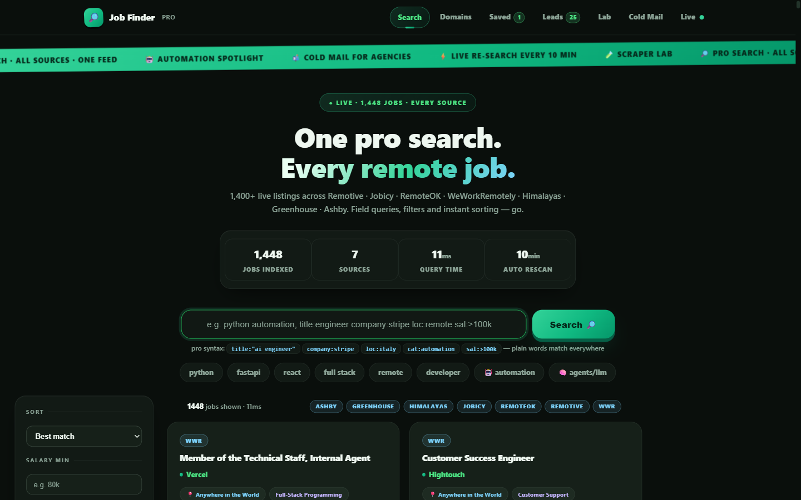
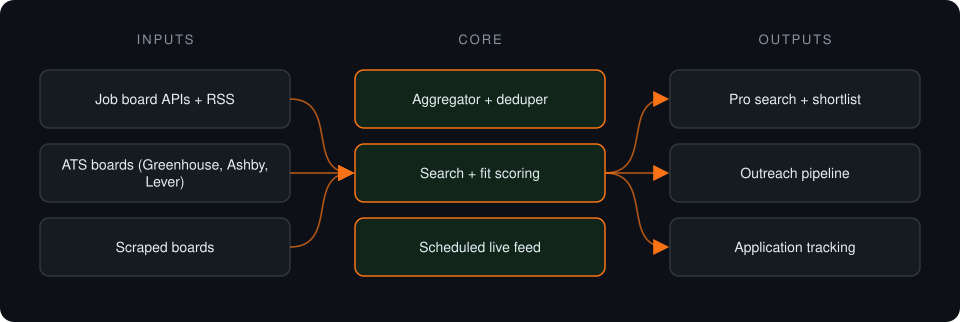
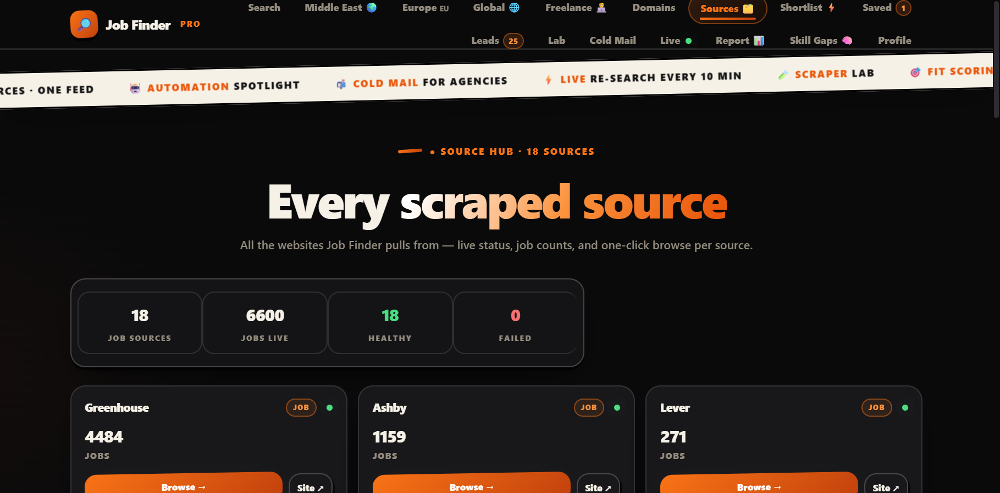
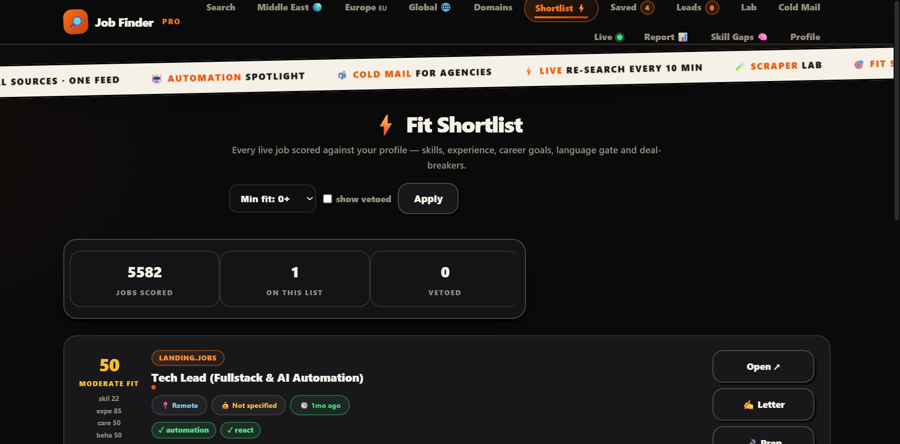
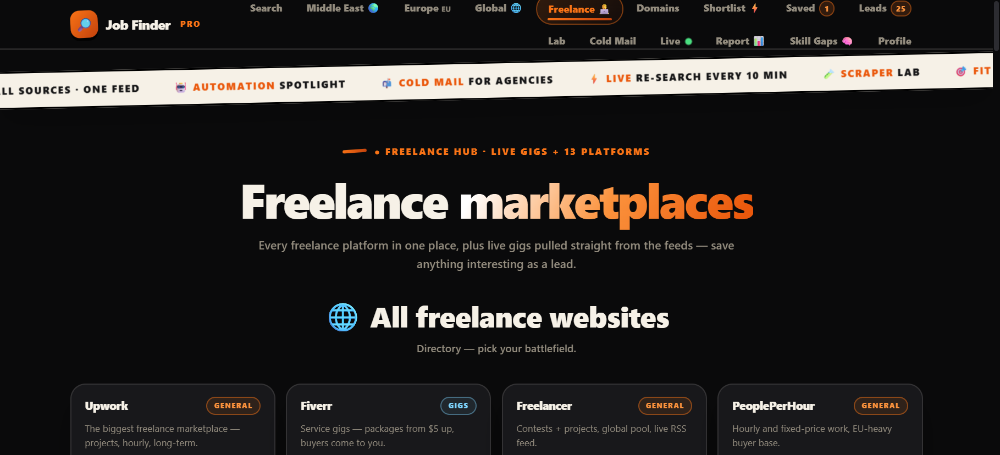

Case study · Private project
Job Finder
Self-hosted job aggregator: one search across 16+ remote-job sources, plus fit scoring, a shortlist, outreach tools and a live feed.
This is a proprietary project. Source code is private. This page showcases the system's architecture and results.

Problem it solves
Remote job listings are scattered across boards, RSS feeds and company ATS pages. This local-first tool aggregates them into one searchable feed and adds tools to shortlist, track and act on the right ones.
Architecture

- Sources are fetched through APIs, RSS, ATS endpoints and scrapers.
- Listings are normalized into one local SQLite store.
- Search, filters and fit scoring rank the results.
- Shortlisted roles move into outreach and application tracking.
Key features
- 16+ sources in one feed
- Salary, level, recency and type filters
- Fit scoring and ranked shortlist
- Scraper lab for new sources
- Local-first: data stays on the machine
Tech stack
- Python
- FastAPI
- SQLite
- httpx
- Playwright
What it does in practice
- Replaces checking a dozen boards with one local search.
Screenshots


